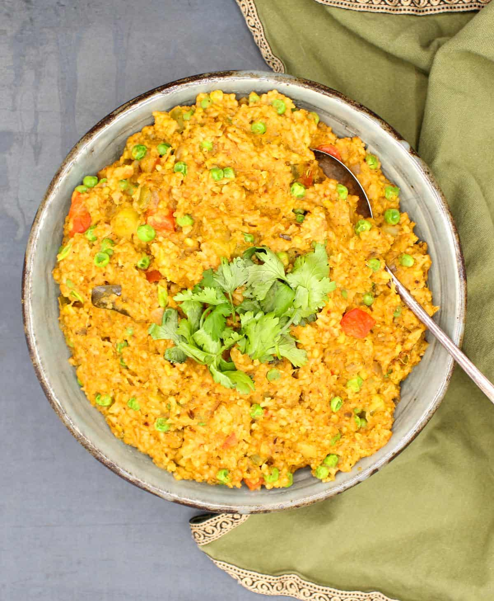

Masala Khichdi Recipe
Hi, I'm Khushi
I'm glad you are here, thankyou for joining me!

Ingredients:
- 1 cup basmati rice
- 1/2 cup split yellow moong dal (lentils)
- 1 onion, finely chopped
- 1 tomato, finely chopped
- 2 green chilies, slit lengthwise
- 1 inch ginger, grated
- 4 cloves garlic, minced
- 1/2 teaspoon cumin seeds
- 1/2 teaspoon turmeric powder
- 1 teaspoon garam masala
- 1/2 teaspoon red chili powder
- Salt to taste
- 2 tablespoons ghee (clarified butter) or oil
- 4 cups water
- Fresh cilantro leaves for garnish
Instructions:
- Wash the rice and moong dal together under running water until the water runs clear. Soak them in water for about 20 minutes. Then, drain the water and set aside.
- In a pressure cooker or a deep pot, heat ghee or oil over medium heat.
- Add cumin seeds and let them splutter.
- Add chopped onions and sauté until they turn golden brown.
- Now, add grated ginger, minced garlic, and slit green chilies. Sauté for another couple of minutes.
- Add chopped tomatoes and cook until they become soft and mushy.
- Once the tomatoes are cooked, add turmeric powder, red chili powder, garam masala, and salt. Mix well and cook for a minute.
- Now, add the drained rice and moong dal to the cooker or pot. Mix everything together.
- Pour in the water and stir well. Adjust salt if needed.
- Close the pressure cooker lid and cook for 3 whistles or if using a pot, cover with a lid and cook until the rice and dal are soft and fully cooked.
- Once done, let the pressure release naturally before opening the cooker lid.
- Garnish with fresh cilantro leaves and serve hot.
More receipes Khushi's Kitchen Creations